LJV
Чему нас может научить визуализация структур данных в Java
 | Иван Пономарев
|
Что значит «сделать лекционный курс»?
14 недель подряд каждую неделю готовить доклад на 1,5 часа
На доске рисовать неохота (а теперь ещё и нельзя)
Хочется делать слайды как код
Можно ли, чтобы слайды рисовали себя сами?
https://habr.com/ru/post/456032/
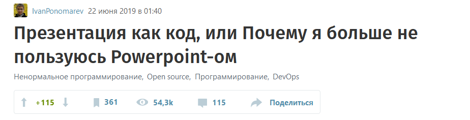
GraphViz (Graph Visualization Software)
Initial release: before 1991
Latest release: 2.46.1, February 2021
DOT language & visualization software
GraphViz (Graph Visualization Software)
| 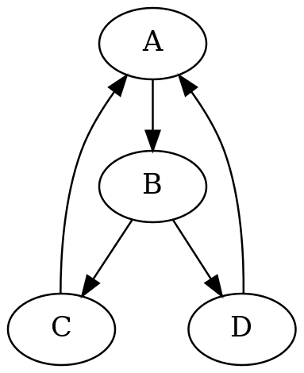 |
Lightweight Java Visualizer
Java Reflection API + GraphViz.
John Hamer “Visualising Java Data Structures as Graphs” (ACE 2004)
GNU GPL, файл
LJV.java.
Lightweight Java Visualizer: второе рождение
Нурас Ногаев, Илья Селиванов (МФТИ)
Улучшен API
Обновлён GraphViz
GitHub, Maven, CI, тесты
https://github.com/atp-mipt/ljv
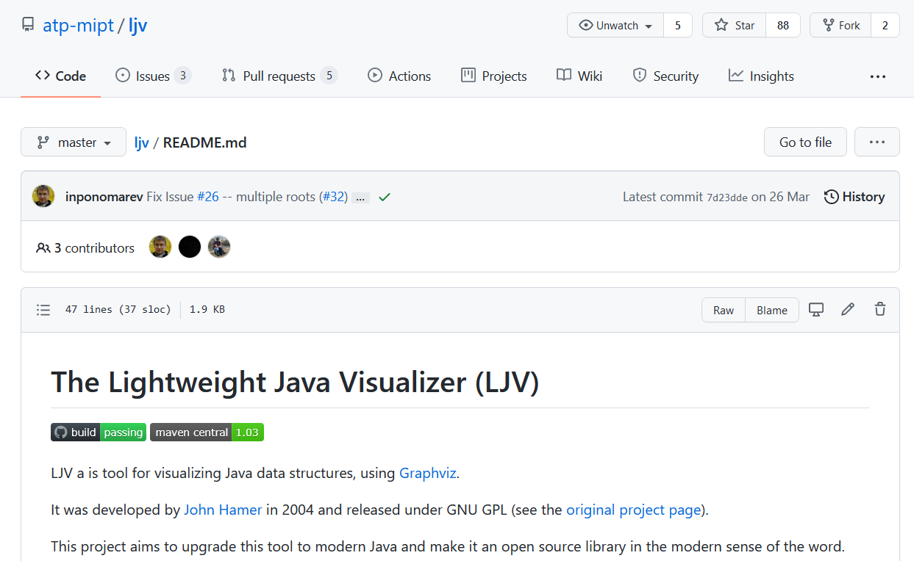
Шаг 1: создаём и конфигурируем LJV
LJV ljv = new LJV()
.setQualifyNestedClassNames(true)
.setIgnoreNullValuedFields(true)
.addFieldAttribute("sourceSpliterator", "constraint=false");Шаг 2: создаём изучаемый объект
Stream<Integer> o =
List.of(1, 2, 3)
.stream()
.map(x -> x * x)
.filter(x -> x % 2 == 0);Шаг 3: визуализируем
//DOT script
String dot = ljv.drawGraph(o);
//use GraphViz online
String encoded = URLEncoder.encode(dot, "UTF8")
.replaceAll("\\+", "%20");
Desktop.getDesktop().browse(
new URI("https://dreampuf.github.io/GraphvizOnline/#"
+ encoded));Шаг 4: смотрим, что же у нас получилось
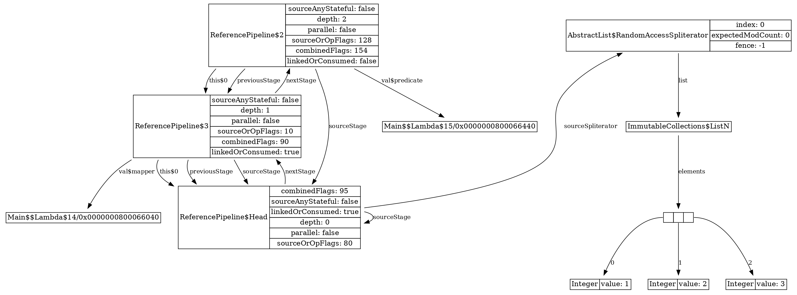
Наш план
Строки и обёртки примитивов
Очереди
MapиConcurrentMapNavigableMapиConcurrentNavigableMap
Строка
new LJV().drawGraph("Hello");Эволюция String
Java 6– | Java 7+ | Java 9+ | Java 13+ |
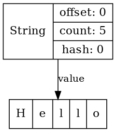 | 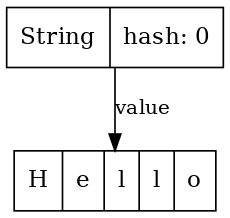 | 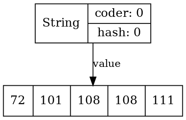 | 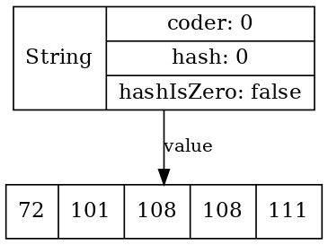 |
Java 6
"The quick brown fox jumps over the lazy dog".split(" ")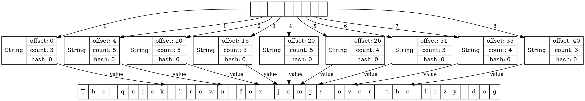
Java 6: memory leak
"The quick brown fox jumps over the lazy dog".substring(0, 3)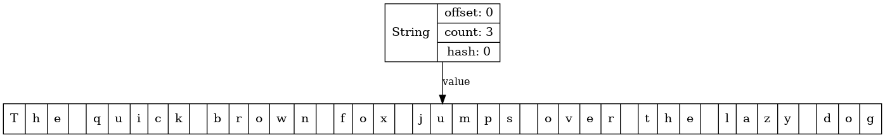
Java 8: no offset/count
"The quick brown fox jumps over the lazy dog".split(" ")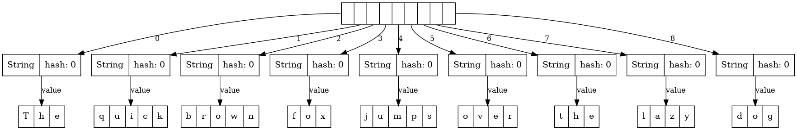
Java 8: no offset/count
"The quick brown fox jumps over the lazy dog".substring(0, 3)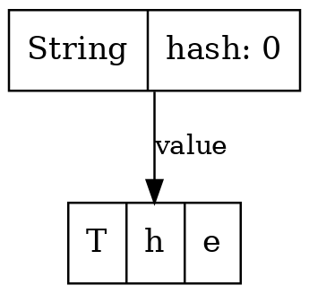
Java 8-: backed by char[]
new String[]{"Hello!", "Привет!"}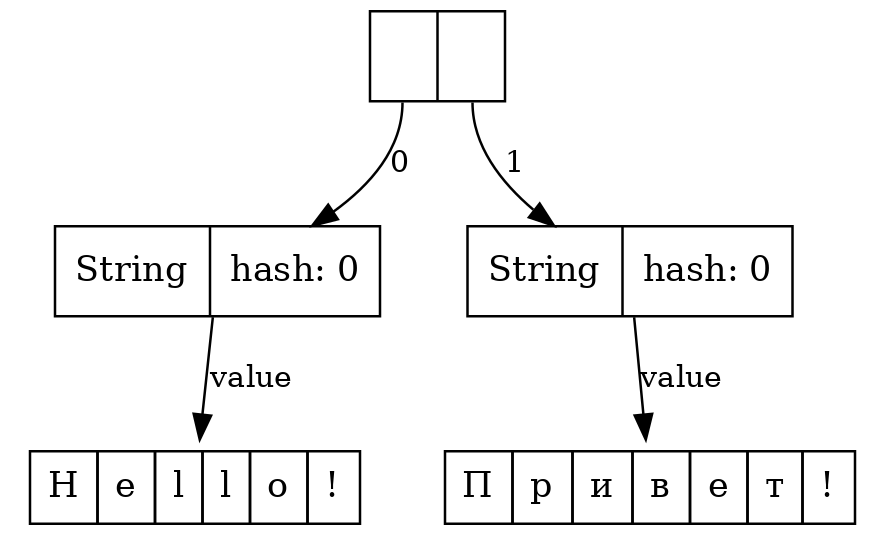
Java 9+: backed by byte[]
new String[]{"Hello!", "Привет!"}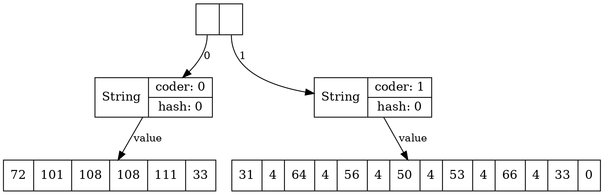
Zero hashcode: Java 12-
String[] s = new String[]{"f5a5a608", "abc"};
System.out.println(s[0].hashCode()); //0
System.out.println(s[1].hashCode()); //96354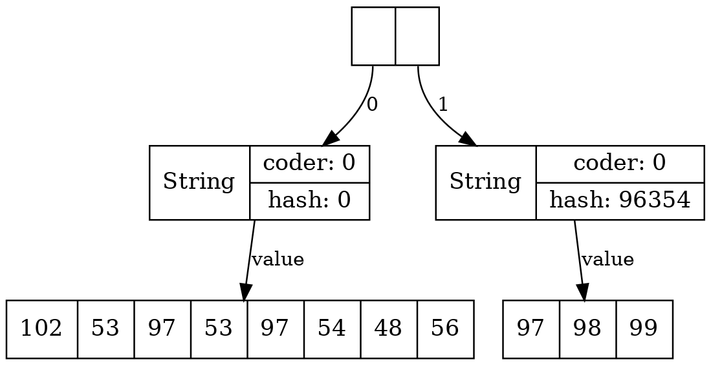
Zero hashcode: Java 13+
String[] s = new String[]{"f5a5a608", "abc"};
System.out.println(s[0].hashCode()); //0
System.out.println(s[1].hashCode()); //96354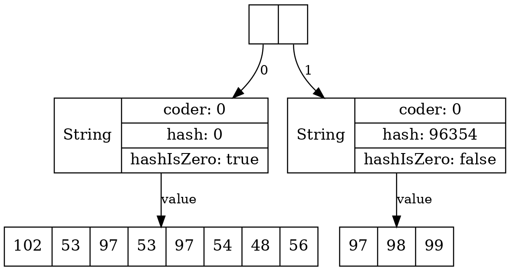
Создание строк
LJV ljv = new LJV().addIgnoreField("hash")
.addIgnoreField("coder").addIgnoreField("hashIsZero");
String x = "Hello";
new String[]{x,
new String(x),
new String(x.toCharArray()),
x + "",
"" + x,
x.concat(""),
"".concat(x)}Создание строк (Java 15-)
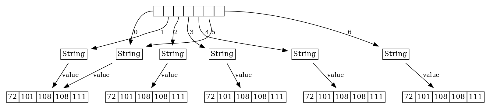
/*0*/ x,
/*1*/ new String(x), //переиспользуется буфер
/*2*/ new String(x.toCharArray()),
/*3*/ x + "",
/*4*/ "" + x,
/*5*/ x.concat(""), //переиспользуется весь x
/*6*/ "".concat(x)Создание строк (Java 16+)
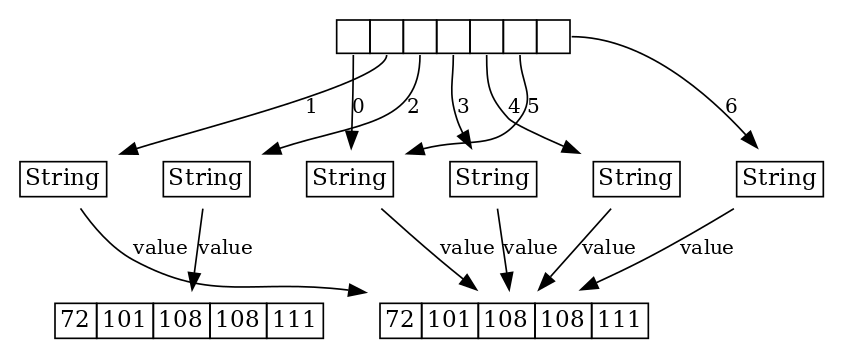
/*0*/ x,
/*1*/ new String(x),
/*2*/ new String(x.toCharArray()),
/*3*/ x + "",
/*4*/ "" + x,
/*5*/ x.concat(""), //переиспользуется весь x
/*6*/ "".concat(x)Интернирование строк
| 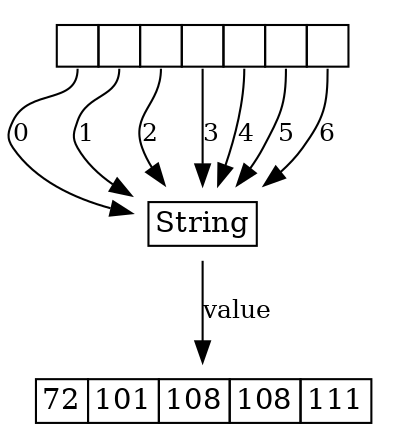 |
Промежуточные выводы
Переходите на новые версии Java, строки всё лучше и лучше!
При наличии показаний со стороны перформанс-анализа делайте дедупликацию строк (но не через
intern()).
Что посмотреть по теме
Дедупликация (кэширование) boxed primitives
new Integer[]{
42,
42,
Integer.valueOf(42),
new Integer(42),
-4242,
-4242
}Дедупликация (кэширование) boxed primitives
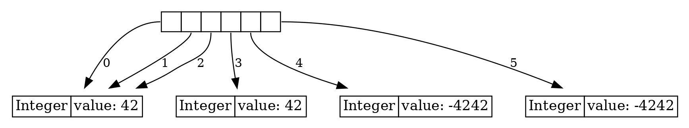
/*0*/ 42,
/*1*/ 42, // дедуплицируется диапазон -128 .. 127
// или -128 .. -XX:AutoBoxCacheMax
/*2*/ Integer.valueOf(42), //дедуплицируется
/*3*/ new Integer(42), //НЕ дедуплицируется, deprecated since Java9
/*4*/ -4242,
/*5*/ -4242 //не дедуплицируется (вне диапазона)Промежуточные выводы
Помните о дедупликации boxed primitives
При наличии показаний со стороны перформанс-анализа используйте библиотеки:
Eclipse collections primitive collections
…
…ну или ждём Valhalla (generic specialization)
Наш план
Строки и обёртки примитивов
Очереди
MapиConcurrentMapNavigableMapиConcurrentNavigableMap
LinkedList (implements List, Deque)
LJV ljv = new LJV().setDirection(Direction.LR)
.addFieldAttribute("last", "constraint=false")
.addFieldAttribute("prev", "constraint=false")
.setTreatAsPrimitive(Integer.class);
List<Integer> list = new LinkedList<>();
list.add(1); list.add(2); list.add(3); list.add(4);
visualize(ljv, list);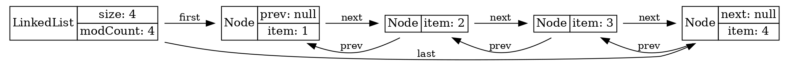
Нужен ли LinkedList в Java?
ArrayDeque
LJV ljv = new LJV()
.setTreatAsPrimitive(Integer.class)
.highlightChangingArrayElements();ArrayDeque
//note that this sets initial capacity to 5!
Deque<Integer> arrayDeque = new ArrayDeque<>(4);
arrayDeque.add(1); arrayDeque.add(2); arrayDeque.add(3);
visualize(ljv, arrayDeque);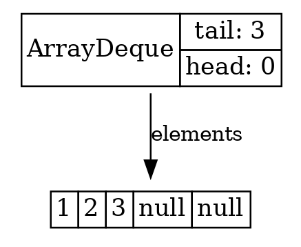
ArrayDeque
arrayDeque.poll(); //returns 1
arrayDeque.poll(); //returns 2
visualize(ljv, arrayDeque);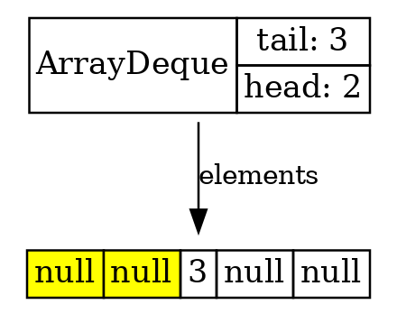
ArrayDeque
arrayDeque.add(4); arrayDeque.add(5); arrayDeque.add(6);
visualize(ljv, arrayDeque);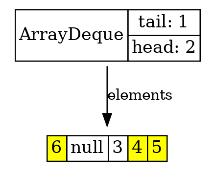
PriorityQueue
List<Integer> list = IntStream.range(0, 16)
.boxed()
.collect(Collectors.toList());
Collections.shuffle(list);
visualize(new LJV().setTreatAsPrimitive(Integer.class),
list.toArray());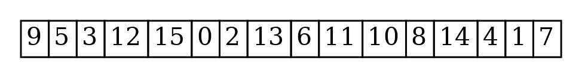
PriorityQueue
LJV ljv = new LJV().setTreatAsPrimitive(Integer.class)
.setIgnoreNullValuedFields(true)
.highlightChangingArrayElements();
PriorityQueue<Integer> q = new PriorityQueue<>(16);
q.addAll(list);
visualize(ljv, q);
PriorityQueue: в чём фокус?
Binary min-heap, инварианты:
\(q[n] \leq q[2n + 1]\)
\(q[n] \leq q[2n+2]\)
Следствие:
\(q[0] = \min(q)\)
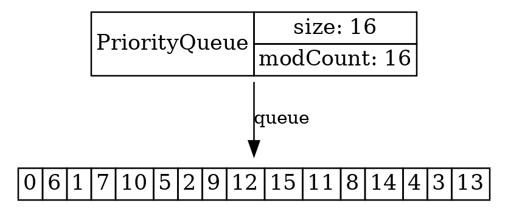
Удаление элемента
q.poll();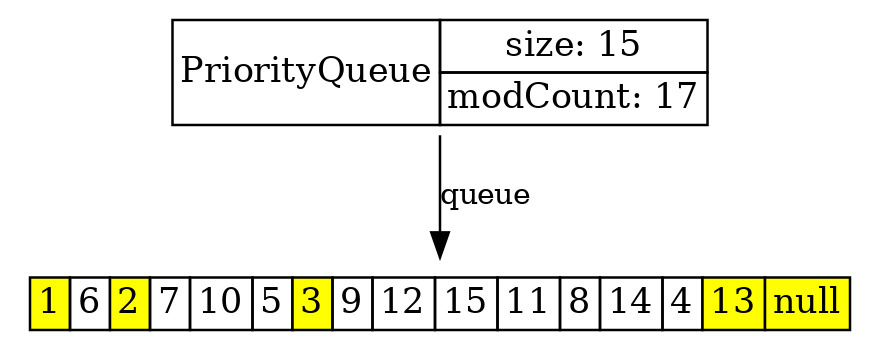
Удаление элемента
q.poll();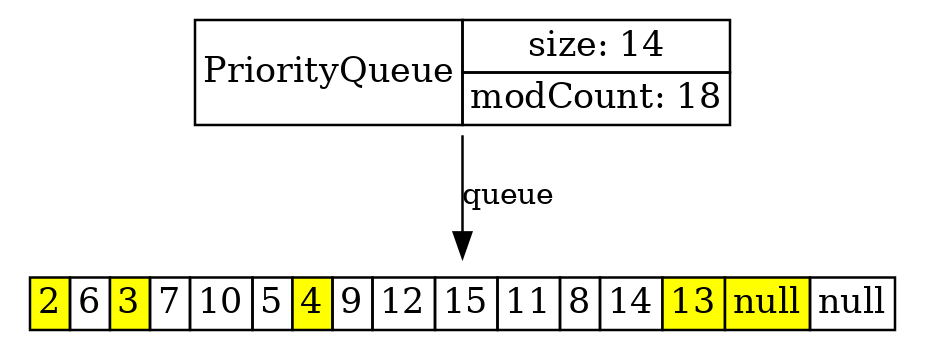
Удаление элемента
q.poll();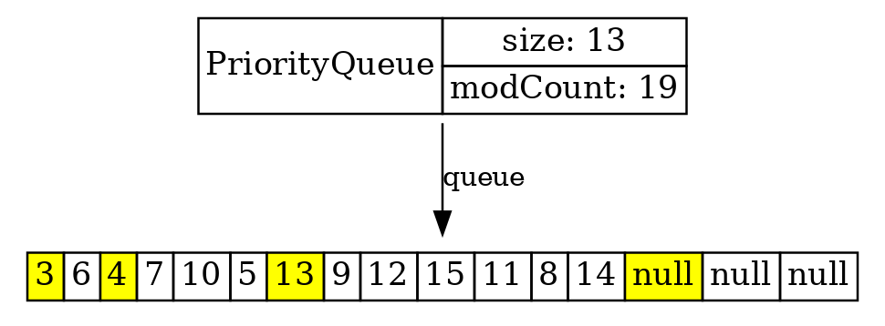
Добавление элемента
q.add(1);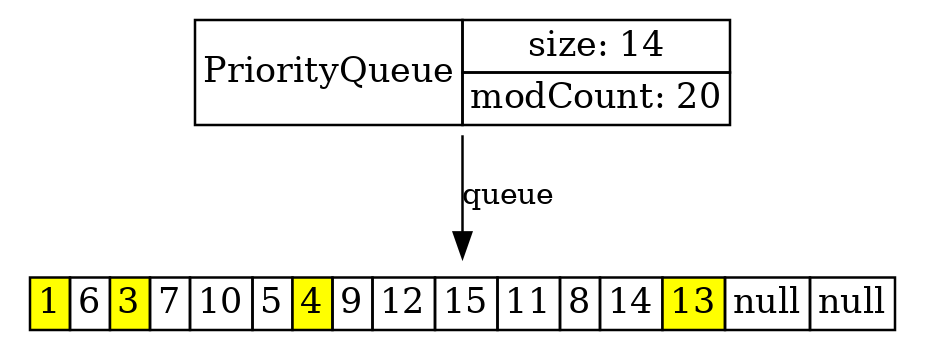
Concurrent Lock-free Queue/Deque?


Промежуточные выводы
java.util.LinkedListне нужен, используемArrayList/ArrayDeque/PriorityQueue.Массив — очень мощная основа для построения эффективных структур данных!
Если нужна потокобезопасность и неблокирующее поведение, идея связного списка снова начинает работать в
ConcurrentLinkedQueue/ConcurrentLinkedDeque.
Наш план
Строки и обёртки примитивов
Очереди
MapиConcurrentMapNavigableMapиConcurrentNavigableMap
Его Величество HashMap
LJV ljv = new LJV()
.setIgnoreNullValuedFields(true)
.setTreatAsPrimitive(Integer.class)
.setTreatAsPrimitive(String.class);
Map<String, Integer> map = new HashMap<>();
map.put("one", 1); map.put("two", 2);
map.put("three", 3); map.put("four", 4);
visualize(ljv, map);Его Величество HashMap
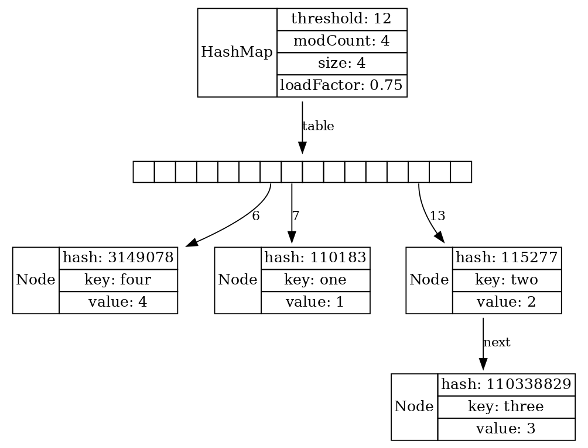
Готовим визуализацию
LJV ljv = new LJV()
.setIgnoreNullValuedFields(true)
.setTreatAsPrimitive(Integer.class)
.setTreatAsPrimitive(String.class)
.addIgnoreField("value")
.addFieldAttribute("prev", "constraint=false,color=green")
.addFieldAttribute("next", "constraint=false,color=green")
.addObjectAttributesProvider(Main::redBlackForHM);
//redBlackForHM: red ? "color=red" : "color=black";Готовим коллизии
List<String> collisions =
new HashCodeCollision().genCollisionString(7);
Map<String, Integer> map = new HashMap<>();
for (int i = 0; i < len; i++) {
map.put(collisions.get(i), i);
}
visualize(ljv, map);6 коллизий
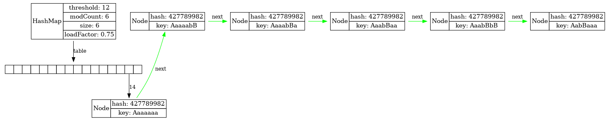
11 коллизий, Java 8+: одеревенение
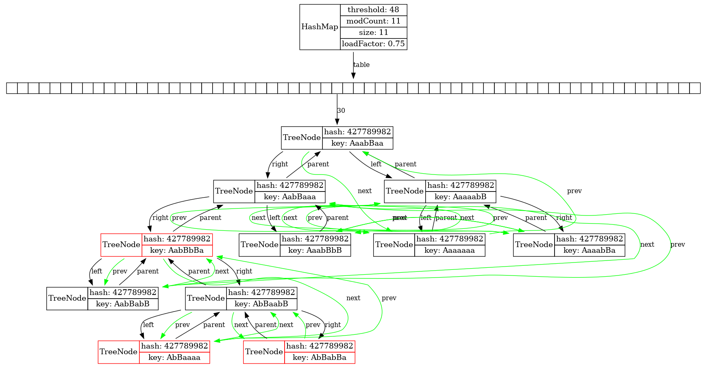
TreeNode
static final class TreeNode<K,V> extends LinkedHashMap.Entry<K,V> {
TreeNode<K,V> parent; // red-black tree links
TreeNode<K,V> left;
TreeNode<K,V> right;
TreeNode<K,V> prev; // needed to unlink next upon deletion
boolean red;LinkedHashMap.Entry?!
LinkedHashMap: почти готовый LRU кэш
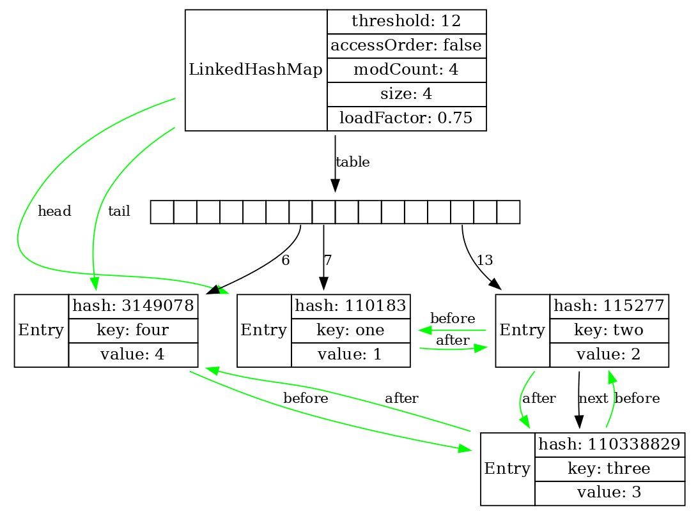
LinkedHashMap: режим access order
Map<String, Integer> map = new LinkedHashMap<>(5, 0.8f,
/*accessOrder:*/ true);
map.put("one", 1); map.put("two", 2);
map.put("three", 3); map.put("four", 4);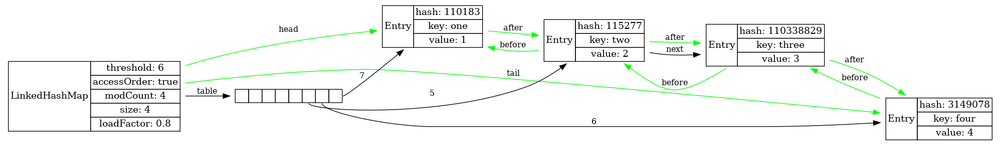
LinkedHashMap: режим access order
map.get("two");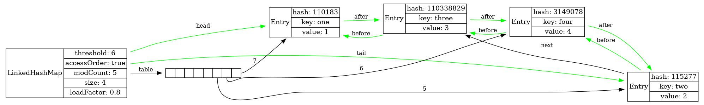
MapN: иммутабельная хэшмапа
ljv = new LJV().setIgnoreNullValuedFields(true);
Map.of(1, 'A', 2, 'B', 3, 'C', 4, 'D'));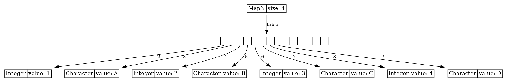
Коллизии в MapN: linear probing
Map.of("aaa", 1, "abB", 2, "bBa", 3)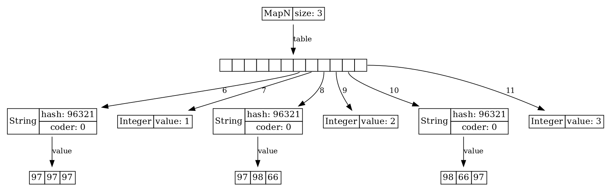
ConcurrentHashMap
Map<String, Integer> map =
new ConcurrentHashMap<String, Integer>(
/*initialCapacity:*/16 ,
/*loadFactor:*/0.75f,
/*concurrencyLevel:*/8);
map.put("one", 1);
map.put("two", 2);
map.put("three", 3);
map.put("four", 4);
map.put("five", 5);
visualize(map);ConcurrentHashMap: Java 7-

ConcurrentHashMap: Java 8+

Промежуточные выводы
Существенный апгрейд
HashMapиConcurrentHashMap— в Java 8.В Java 9 — иммутабельные хэшмапы с открытой адресацией.
Не забываем про
LinkedHashMap:два режима работы
protected boolean removeEldestEntry(…)
Наш план
Строки и обёртки примитивов
Очереди
MapиConcurrentMapNavigableMapиConcurrentNavigableMap
TreeMap: красно-чёрное дерево
LJV ljv = new LJV()
.setTreatAsPrimitive(Integer.class)
.setTreatAsPrimitive(String.class)
.setIgnoreNullValuedFields(true)
.addIgnoreField("color")
.addObjectAttributesProvider(Main::redBlack);
//color ? black : red
Map<String, Integer> map = new TreeMap<>();
map.put("one", 1); map.put("two", 2);
map.put("three", 3); map.put("four", 4);
map.put("five", 3); map.put("six", 4);
visualize(ljv, map);TreeMap: красно-чёрное дерево
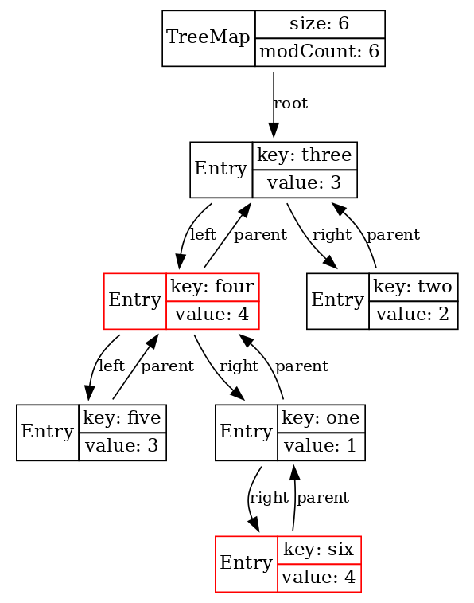
Красно-чёрное дерево: в чём фокус?
Инварианты КЧД:
Корень — чёрный.
null—«листья» в конце ветвей считаются чёрными.Оба потомка каждого красного узла — чёрные.
Любой простой путь от узла-предка до листового узла-потомка содержит одинаковое число чёрных узлов.
Следствие:
Путь от корня до самого дальнего листа (ЧКЧКЧ…) не более чем вдвое длиннее, чем до самого ближнего (ЧЧЧ…)
TreeMap
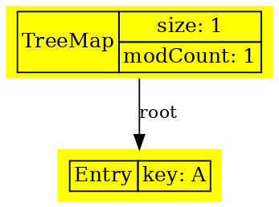
TreeMap
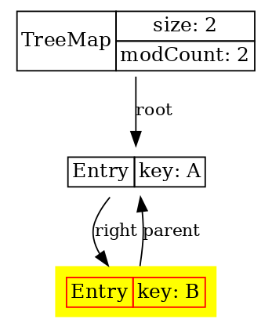
TreeMap
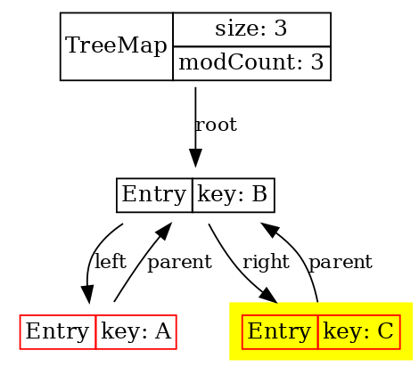
TreeMap
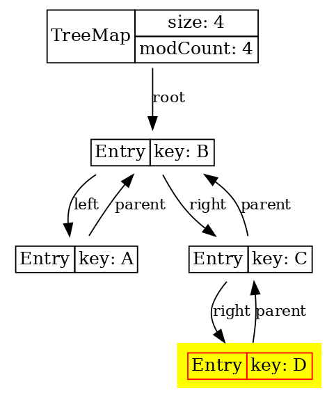
TreeMap
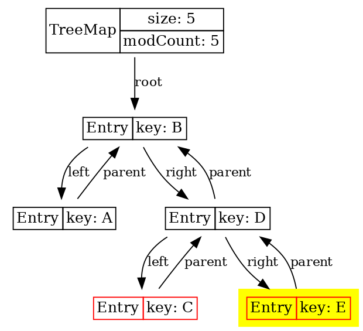
TreeMap
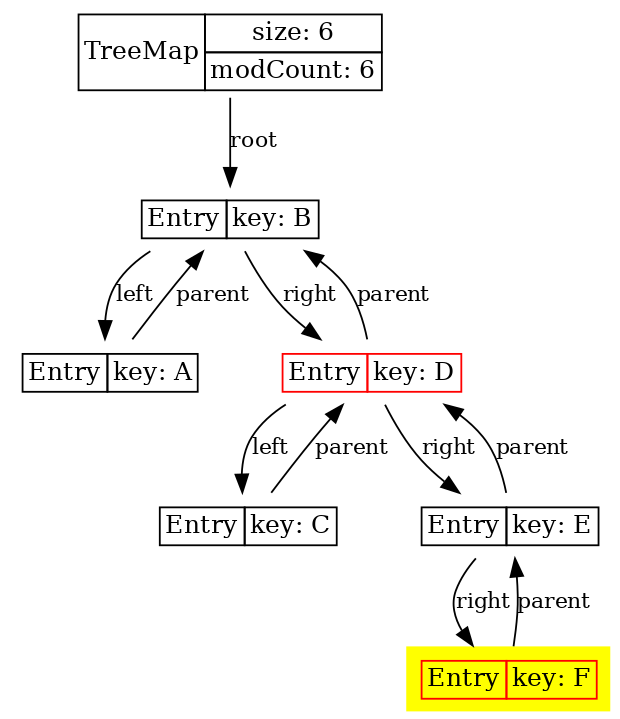
TreeMap
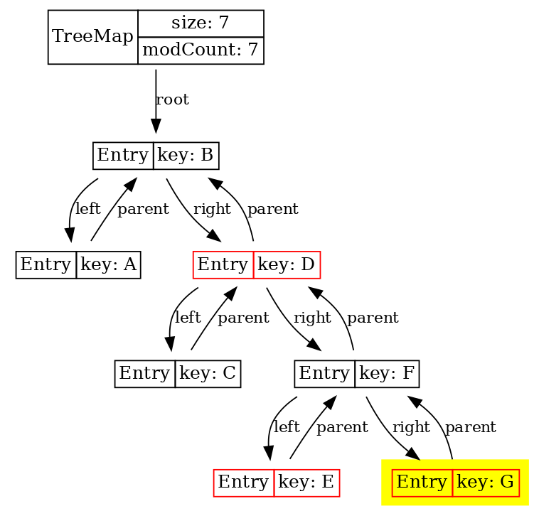
TreeMap
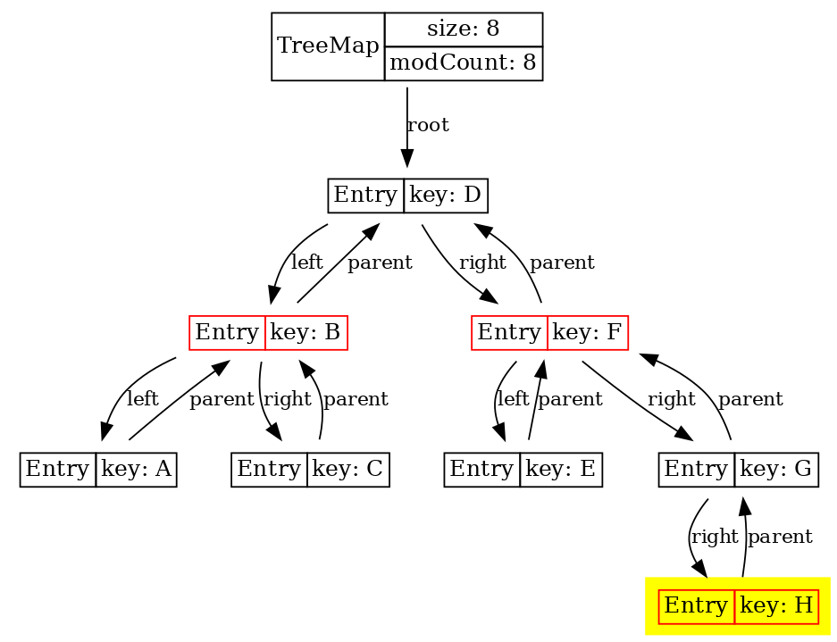
ConcurrentSkipListMap: идея

ConcurrentSkipListMap
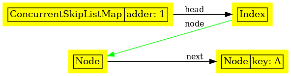
ConcurrentSkipListMap

ConcurrentSkipListMap
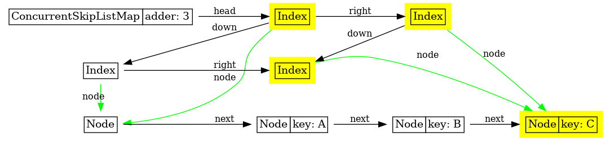
ConcurrentSkipListMap

ConcurrentSkipListMap
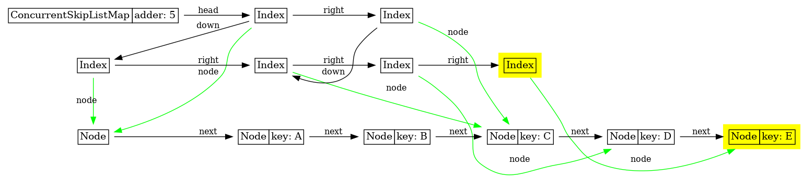
ConcurrentSkipListMap
ConcurrentSkipListMap

ConcurrentSkipListMap
Промежуточные выводы
Продвинутые алгоритмы творят чудеса.
Мы вступили на почву, где простой визуализации недостаточно.
На этом всё!
Смотрите проект https://github.com/atp-mipt/ljv
Экспериментируйте
Присылайте свои идеи
Исходники примеров и презентации: https://github.com/inponomarev/ljvtalk